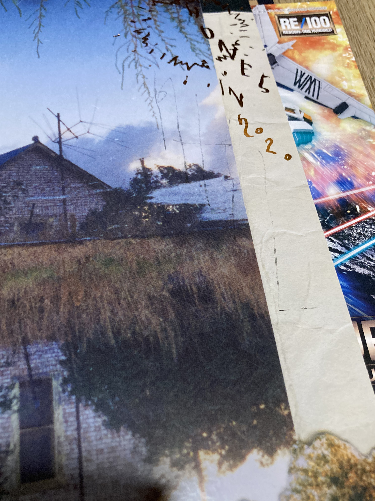
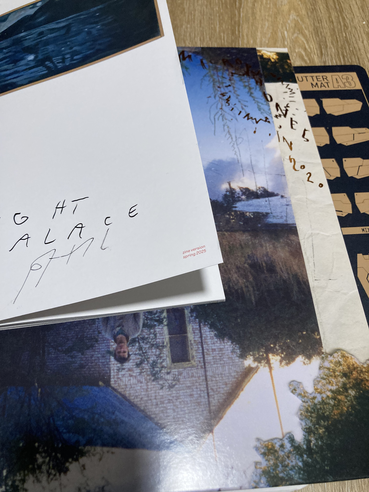
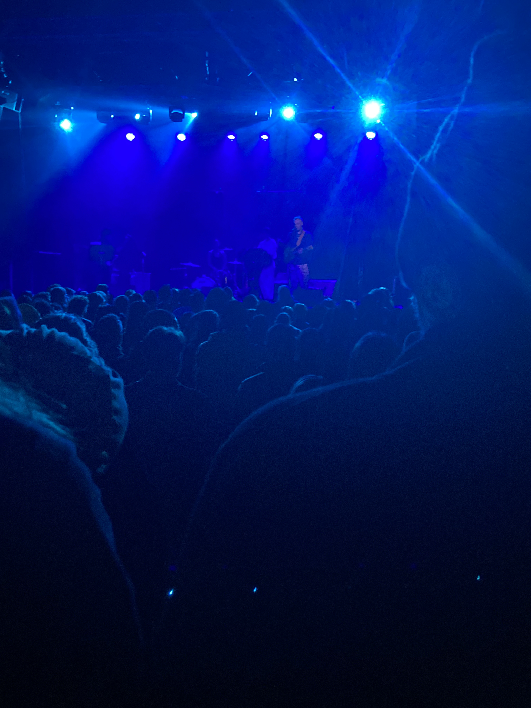
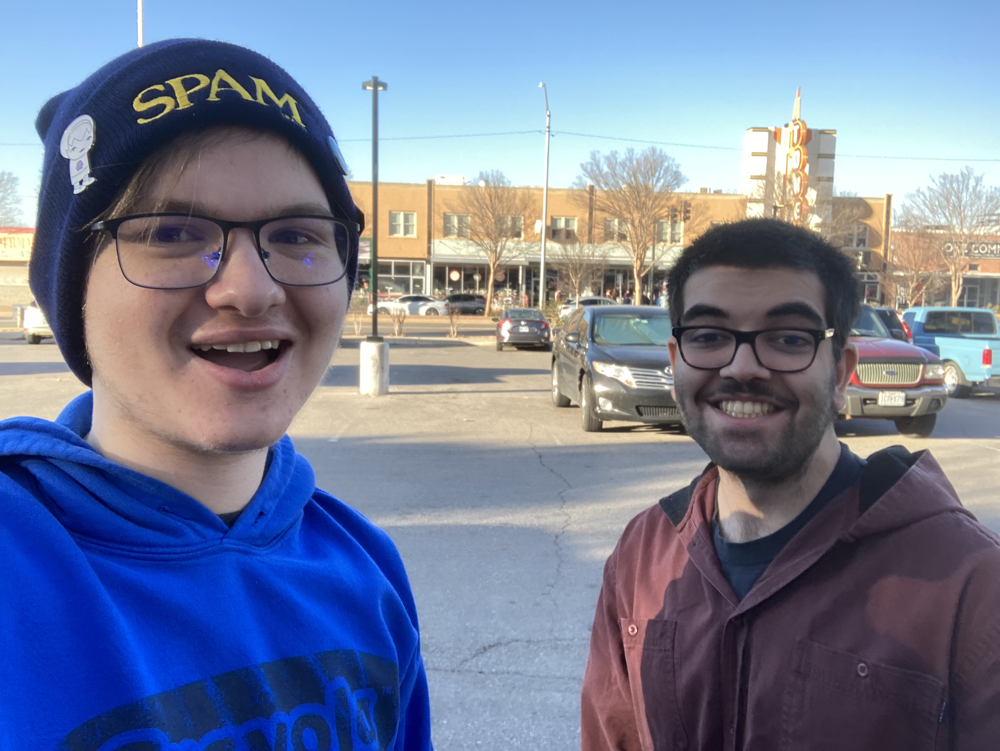

I went to the Mount Eerie live show. And I've been in a mixed episode, as of recent. It's rare — rare to the point I can't remember having a real mixed episode before, though my memory is very bad — and I've been very bad at coping with it. Bipolar 2 always surprises you.
I've had energy the past few weeks. Boundless — not really, bounded but uncontrollably — and at the same time I've had no will to do much of anything. It's a violent, uncomfortable mixture. I haven't been good with myself, I haven't been good with others. I haven't been eating well, I haven't been sleeping well. I've gained 8-ish pounds, which as I've discussed before I'm fine with, but such a significant metabolic change is meaningful in the measured way I've not changed previously. It's not scary, really, I don't feel much fear at anything other than the state of the world nowadays. But it's concerning, to me.
There was a section here that I wrote, about a friend who was diagnosed with Bipolar 1. I decided to redact it, for publishing. This is all to say I went to Mount Eerie live show, which I already mentioned earlier.
Mount Eerie, the Microphones, all of Phil Elverum's work means a lot to me. It's been there for me during difficult times. The entirety of Fall 2023, living in the Zugpartment 1, biking around OSU, that was defined by It Was Hot, We Stayed in the Water. He's a poet, he's a beautiful poet, my envy comes in because I wish I could be one part the poet he is. I listened to Microphones in 2020 and it's probably the best album I've ever listened to, with the panoply of what came before it. I listened to the entirety of Phil's backlog, every last hidden album and minor side thing, before listening to Microphones in 2020. And then I listened to Night Palace.
I didn't have the will to go tonight. I was gonna go with my friend (she insists on calling me "oomf", and I oblige by calling her that back), but she's sick, so she didn't go today. I sat in my bedroom, today, after class, in the Zugpartment 2. I played Hello Kitty Island Adventure. And. I suddenly had the will, around 7:10pm. The show started at 6:45.
It was a short walk, just 6 blocks. I already had my ticket. I came in as him and the band were playing Non-Metaphorical Decolonization. It was beautiful. And I stood near the back, next to old men and middle-aged men and younger people, drinking beers and talking, and listened and I watched. It ended just a dozen or so minutes later. And I had to !shutdownbot in RFCK during — not "had to", more that managing nurses-office things while at otherwise important events takes me back to good times. I stood near the merch table, afterwards, and Phil came over, and there were just 3 people ahead of me. When it came my turn I grabbed the Microphones in 2020 vinyl and awkwardly told Phil it meant a lot to me, and then I grabbed the Night Palace zine and my credit card and handed it to him. It was 43 dollars. I asked if he could sign them, with the pen that was oddly placed next to him, and he tried signing my vinyl, though it was a pen, and wouldn't sign, and the few tries to get it to he remarked was a "ghost signature". Then I asked about the zine, "pretty please" (I don't know why I said that), and he signed that, and then I said thank you and walked away, and put the vinyl back into its slip cover at a random table some guy was at.


The "ghost signature" on Microphones in 2020. And then it and the Night Palace zine (signed with Phil's name).

Phil in front of the audience.
The walk back was equally short, 6 blocks, though I was stopped by a guy on the street, trying to pawn worthless scraps of paper for money for a drink. I said "no thank you, if that's okay", and kept walking. I stopped in Lunds and Byerlys, and picked up an AriZona iced tea and a thing of Cheetos. And then I came back here — I forgot to lock my door, though nothing bad came of it — and now I'm a warm bath, writing this. I remember when Kip came up to Minneapolis for my birthday, and we saw Ada Rook, and we ate some fuckin' food from Lunds and Byerlys together, and watched Being John Malkovich. And I blew up a day afterwards, about Krak. I guess concerts remind me of Kip now, as much as they remind me of Fadi, my first crush, at the Lucy Dacus show.

Me and Fadi, February 2022, at Lucy Dacus' couch tour in OKC.
I'm still in the bath. I see my body hair levitate off my body. I think it's beautiful. I wonder if anybody will ever want to see me like this. Life means so much. I'm glad I went tonight. I'll remember being there, more than I will Hello Kitty Island Adventure. And Phil's work means so much to me. I'm so thankful to him, and his art.